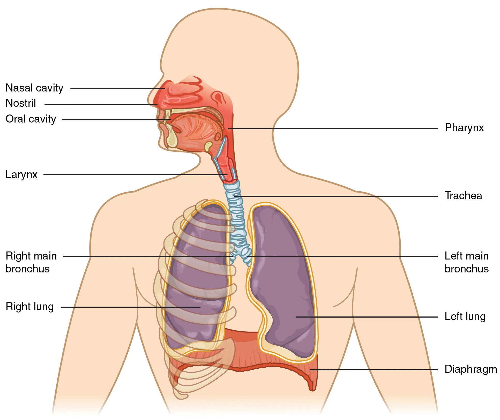
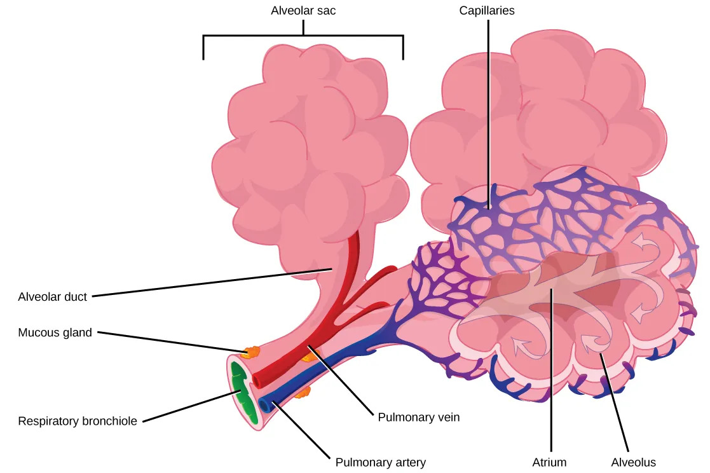

上呼吸道：鼻、咽、喉——对吸入气体加温、湿润、过滤。
下呼吸道：气管、支气管、肺——气体传导与交换。

鼻：鼻腔有鼻毛和黏膜（加温、湿润、过滤空气）；鼻旁窦（额窦、上颌窦、蝶窦、筛窦）——共鸣、减轻颅重。
咽：鼻咽、口咽、喉咽——气体和食物的共同通道。
喉：软骨支架（甲状软骨、环状软骨、会厌软骨等）；声带为发声结构。会厌软骨在吞咽时盖住喉口。
气管和支气管：
肺：左肺两叶，右肺三叶（因心脏偏左）。肺泡是气体交换的场所。
肺泡壁极薄，由两种细胞构成：
呼吸膜（血气屏障）——气体交换必经路径：
总厚度仅约0.2-0.5μm，利于气体快速扩散。O₂进入血液，CO₂排出肺泡。
